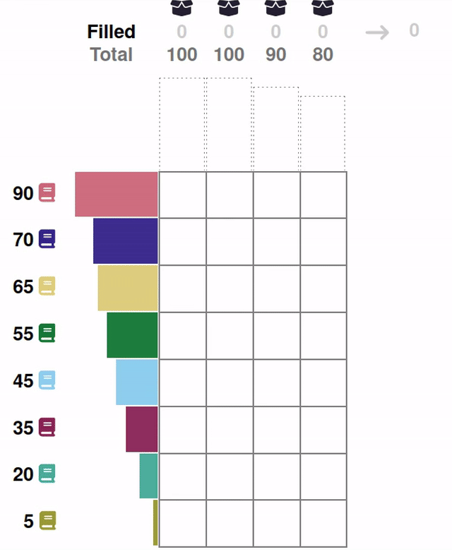

Machine Learning for Human-Centered Solutions
Interpretability, Emotion Recognition, and Therapeutic Innovation
Dominik Pegler
Overview
- Machine Learning to enhance human experience in cognitive and affective domain
- Cognitive Domain
- 1 – Interpretability of Machine-Generated Solutions
- Affective Domain
- 2 – Fear Detection
- 3 – Optimizing Exposure Therapy
- Cognitive Domain
Project 1
INTERPRETABILITY OF MACHINE-GENERATED SOLUTIONS TO COMBINATORIAL DESIGN PROBLEMS
Problem Setting
Machine Problem-Solving
- Increasingly taking over human domains
- AI getting more complex → black boxes → lack of trust
- Trust issues not new (Classical AI in 1950s)
Evaluating Human Interpretability
- Human-in-the-loop approach to evaluate interpretability
- Understanding how a machine makes a decision
- Critical for trust and collaboration with machines

Figure 1: George Dantzig, father of linear programming (Source: malevus.com).
Combinatorial Design Problems

Figure 2: Knapsack Problem (source: wikimedia commons).
{kind=link}

Figure 3: Traveling Salesman Problem (source: wikimedia commons).
{kind=link}

Figure 4: Minimum Spanning Tree Problem (source: wikimedia commons).
{kind=link}
- Many real-world scenarios (logistics, etc.)
- Can be solved by machines optimally (e.g., with Linear Programming)
- Can be solved by humans (if problem is small enough)
→ Good setting for human-machine collaboration
Bin-Packing Problem
- Abstract representation of real-world scenarios (e.g., scheduling)
- Pack items into boxes
- Goal: Fill the boxes as much as possible
- Constraint: You cannot overfill the boxes

Figure 5: A human performing the bin packing task.
Optimal Solutions

Figure 6: The machine (CP-SAT) providing possible optimal solutions.
Question
"What makes a solution interpretable?"
Hypotheses
H1: Heuristic
- Humans use heuristics to solve these problems, i.e., a greedy heuristic
- …
- → Solutions more interpretable the more similar they are to the greedy solution
Hypotheses
H2: Simplicity
- …
- …
- → Solutions more interpretable the simpler they are
Hypotheses
H3: Representation
- Focus on order
- Items and boxes can be sorted by size or at random
- → Solutions more interpretable if they sorted
Experiment
- here an overview
- of the
- experiment
- …
Experiment
- here a more detailed view of the evaluation trials
Results
Limitations
Takeaways
Project 2
LEARNING AND LOCALIZING FEAR WITH COMPUTER VISION MODELS
Problem Setting
- Exposure therapy research
- Aim: computer-aided exposure therapy
- Focus on spider phobia
- Stimuli = images
- Information needed, e.g., how much fear they provoke
- we collected for a set of around 300 spider images fear ratings
- Problem: Number of stimuli limited (300)
- constantly collecting new fear ratings for each new stimulus not feasible
Deep Neural Networks
- Solution: Deep neural networks create larger stimulus sets (LeCun et al., 2015)
- Train them on old data (300 images with fear ratings) so that they can give you a fear rating for any new image
Additional Use Cases
- Content Management
- Alignment Research
Project 3
LEARNING OPTIMAL EXPOSURE THERAPY PROTOCOLS WITH REINFORCEMENT LEARNING
Problem Setting
- Reinforcement Learning (RL; Sutton & Barto, 2018)